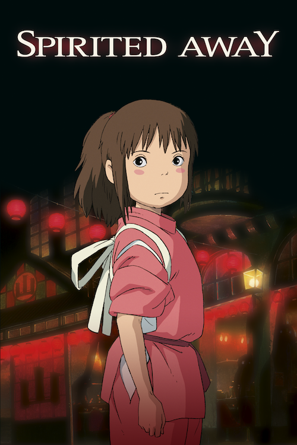
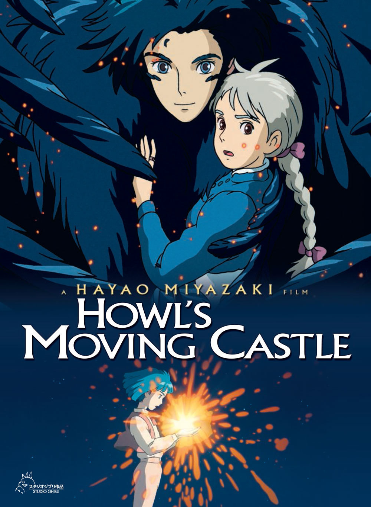

Ένα νεαρό αγόρι γνωρίζει τυχαία μια μυστηριώδη κοπέλα που πέφτει από τον ουρανό. Το κορίτσι, η Sheeta, κυνηγήθηκε από πειρατές, στρατό και κυβερνητικούς μυστικούς πράκτορες. Για να σώσουν τη ζωή της, ξεκινούν μια μεγάλη ιπτάμενη περιπέτεια που περνάει μέσα από όλα τα είδη ιπτάμενων μηχανών, αναζητώντας τελικά την ταυτότητα της Sheeta σε ένα πλωτό κάστρο ενός χαμένου πολιτισμού.
Η ιστορία του Seita και της Satsuko, δύο νέων αδελφών από την Ιαπωνία, που ζούσαν στις ημέρες της παρακμής του Β 'Παγκοσμίου Πολέμου. Όταν ένα αμερικανικό πυροβόλο όπλο διαχωρίζει τα δύο παιδιά από τους γονείς τους, τα δύο αδέλφια πρέπει να βασίζονται εντελώς το ένα στο άλλο, ενώ αγωνίζονται να πολεμήσουν για την επιβίωσή τους.
Δύο νεαρά κορίτσια, η Satsuki και η μικρότερη αδερφή της Mei, μετακομίζουν σε ένα σπίτι στην εξοχή με τον πατέρα τους για να είναι πιο κοντά στη περιθάλπουσα μητέρα τους. Η Satsuki και η Mei ανακαλύπτουν ότι το κοντινό δάσος κατοικείται από μαγικά πλάσματα που ονομάζονται Totoros. Σύντομα συμφιλιώνονται με αυτά τα Totoros, και έχουν πολλές μαγικές περιπέτειες..
Αυτή είναι η ιστορία μιας νεαρής μάγισσας, που ονομάζεται Κίκη και είναι τώρα δεκατριών ετών. Αλλά εξακολουθεί να είναι λίγο πράσινο και αρκετά έντονη, αλλά και επινοητική, φανταστική και αποφασιστική. Με την αξιόπιστη πείρα της μιλώντας γάτας που ονομάζεται Jiji δίπλα της, είναι έτοιμη να αναλάβει τον κόσμο ή τουλάχιστον το παραθαλάσσιο παραθαλάσσιο χωριό που επέλεξε ως νέο σπίτι της.
Στην εποχή των αρχών της δεκαετίας του 1930 ιταλοί πειρατές της αεροπορίας, κυνηγοί γεννητοφώνων και ψηφοφόροι όλων των ειδών κυβερνούν τον ουρανό. Το πιό πονηρό και εξειδικευμένο αυτών των πιλότων είναι ο Porco Rosso. Ένας πρώην άσσος, κάνει τώρα μια ζωή σύμβαση εργασίας πετώντας, όπως τη διάσωση των απαχθέντων από τους πειρατές του αέρα. Ο Ντόναλντ Κέρτιτς, ο αντίπαλος του Porco στον αέρα και στην αλίευση των γυναικών, προσφέρει μια συνεχή πρόκληση στον ήρωα, που κορυφώνεται σε ένα ξεκαρδιστικό, γεμάτο δράση φινάλε.
Δεδομένου ότι η ανάπτυξη της ανθρώπινης πόλης επεκτείνεται στο δάσος και στο λιβάδι του πληθυσμού των σκύλων του ρακούν, τα ρακούν βρίσκονται αντιμέτωποι με την πολύ πραγματική πιθανότητα εξαφάνισης. Σε απάντηση, τα σκυλιά ρακούν ασκούν μια απελπισμένη πάλη για να σταματήσουν την κατασκευή και να διατηρήσουν το σπίτι τους.
Ένα νεαρό κορίτσι διαπιστώνει ότι όλα τα βιβλία που έχει επιλέξει στη βιβλιοθήκη έχουν ελεγχθεί προηγουμένως από ενα αγόρι. Αργότερα συναντά έναν πολύ εξοργιστικό τύπο ... θα μπορούσε να είναι ο "φίλος" της από τη βιβλιοθήκη; Ο παππούς του αγοριού έχει ένα κατάστημα πώλησης βιολιών. Το αγόρι θέλει να γίνει κατασκευαστής βιολιών όπως ο παππούς του.
Ενώ προστατεύει το χωριό του από τον εκκολαπτόμενο θεό / δαίμονα αγριόχοιρου, ένας νεαρός πολεμιστής, ο Ashitaka, είναι πεπεισμένος για μια θανατηφόρα κατάρα. Για να σώσει τη ζωή του, πρέπει να ταξιδέψει στα δάση της δύσης. Μόλις βρεθεί εκεί, εμπλέκεται σε μια άγρια εκστρατεία που οι άνθρωποι έπαιζαν στο δάσος. Η φιλόδοξη κυρία Eboshi και η πιστή της φυλή χρησιμοποιούν τα όπλα τους εναντίον των θεών του δάσους και μια γενναία νεαρή γυναίκα, την πριγκίπισσα Mononoke, που μεγάλωσε από έναν θεό λύκου. Η Ασιτάκα βλέπει το καλό και στις δύο πλευρές και προσπαθεί να σταματήσει την πλημμύρα του αίματος. Αυτό ικανοποιείται με εχθρότητα και από τις δύο πλευρές, καθώς ο καθένας τον βλέπει ως υποστηρίζοντας τον εχθρό
Οι Yamadas είναι μια τυπική Ιαπωνική οικογένεια μεσαίας τάξης στο αστικό Τόκιο και αυτή η ταινία μας δείχνει μια ποικιλία επεισοδίων της ζωής τους. Με ιστορίες που κυμαίνονται από το χιούμορ μέχρι την καρδιά, βλέπουμε αυτή την οικογένεια να αντιμετωπίσει τις μικρές συγκρούσεις, τα προβλήματα και τις χαρές της ζωής με τον δικό της τρόπο.
Η 10χρονη Chihiro και οι γονείς της πηγαίνουν μαζί κατά τη διάρκεια μιας οικογενειακής βόλτας στην ύπαιθρο όταν σκοντάφτουν σε ένα πάρκο ψυχαγωγίας που φαινόταν ότι εγκαταλείφθηκε εδώ και χρόνια. Παρά τις προθέσεις του Chihiro για το ανατριχιαστικό περιβάλλον, οι γονείς της εξερευνούν την περιοχή και τελικά θα ανακαλύψουν και θα επιδοθούν σε ένα κενό εστιατόριο γεμάτο με φρέσκο φαγητό. Ως αποτέλεσμα της απιστίας τους, μετατρέπονται μαγικά σε χοίρους, οι οποίοι με τη σειρά τους τρομάζουν τον Τσιχίρο. Αντιμετωπίζει τον αινιγματικό Haku, ο οποίος εξηγεί σε αυτήν ότι αυτή η γη είναι στην πραγματικότητα ένα μαγευτικό λουτρό, ένα είδος παραθεριστικού θέρετρου, όπου τα υπερφυσικά όντα αναζητούν άνεση μακριά από το γήινο βασίλειο και πρέπει να δουλέψει εδώ, καθώς η τεμπελιά δεν επιτρέπεται, τόσο η ίδια όσο και οι γονείς της από τη μυστικιστική γη.

The cat returns (2002)
Σκηνοθέτης: Hiroyuki Morita Σεναριογράφος: Reiko Yoshida
Ένα νεαρό κορίτσι διασώζει μια μυστηριώδη γάτα από την κυκλοφορία και σύντομα βρίσκει τον ανεπιθύμητο αποδέκτη δώρων και ευνοιών από τον Βασιλιά των Γάτων, ο οποίος θέλει επίσης να παντρευτεί τον γιο του, τον Πρίγκιπα Λούνε. Με τη βοήθεια ενός λιπαρού, γκρινιάρης πραγματικής γάτας και ενός κομψού αγαλματζή γάτας έρχονται στη ζωή (και οι δύο χαρακτήρες εμφανίζονται στο προηγούμενο anime του Studio Ghibli "Whisper of the Heart"), το κορίτσι επισκέπτεται το Cat Kingdom και δραπετεύει ξανά.
Μια ιστορία αγάπης μεταξύ μιας 18χρονης κοπέλας που ονομάζεται Sophie, καταραμένος από μια μάγισσα στο σώμα μιας ηλικιωμένης γυναίκας, και έναν μάγο με το όνομα Howl. Κάτω από την κατάρα, η Sophie θέλει να αναζητήσει την τύχη της, η οποία την οδηγεί στο περίεργο κάστρο του Howl. Στο κάστρο, η Σόφι συναντά τον δαίμονα πυρκαγιάς του Χουλερ, που ονομάζεται Καρουσίφα. Βλέποντας ότι είναι κάτω από μια κατάρα, ο δαίμονας κάνει μια συμφωνία με τη Σόφι - εάν παραβιάσει το συμβόλαιο που έχει με τον Χουτλ, τότε ο Καρουσίφα θα σηκώσει την κατάρα που βρίσκεται κάτω από τη Σόφι και θα επιστρέψει στη 18χρονη μορφή της.

Tales from Earthsea (2006)
Σκηνοθέτης: Gorō Miyazaki Σεναριογράφοι: Ursula K Le Guin, Gorō Miyazaki, Keiko Niwa
Κάτι περίεργο έχει έρθει πάνω από τη γη. Το βασίλειο επιδεινώνεται. Οι άνθρωποι αρχίζουν να δρουν παράξενα ... Αυτό που είναι ακόμη πιο περίεργο είναι ότι κάποιοι αρχίζουν να βλέπουν δράκους, οι οποίοι δεν πρέπει να εισέλθουν στον κόσμο των ανθρώπων. Λόγω όλων αυτών των παράξενων γεγονότων, ο Ged, ένας περιπλανώμενος μάγος, ερευνά την αιτία. Κατά τη διάρκεια του ταξιδιού του, συναντά τον Πρίγκιπα Αρρέν, ένα νεαρό θλιμμένο αγόρι. Ενώ ο Arren μπορεί να μοιάζει με ένα ντροπαλό νεαρό έφηβο, έχει μια σοβαρή σκοτεινή πλευρά, η οποία του δίνει τη δύναμη, το μίσος, την αηδία και δεν έχει κανένα έλεος, ειδικά όταν πρόκειται για την προστασία της Teru. Για την μάγισσα Kumo αυτή είναι μια τέλεια ευκαιρία. Μπορεί να χρησιμοποιήσει τους "φόβους" του αγοριού εναντίον του ίδιου που θα τον βοηθήσει, τον Ged.
Ο γιος του ναυτικού, ο 5χρονος Sosuke, ζει μια ήσυχη ζωή σε ένα βράχο του ωκεανού με τη μητέρα του Λίζα. Μια μοιραία ημέρα, βρίσκει ένα όμορφο χρυσόψαρο παγιδευμένο σε ένα μπουκάλι στην παραλία και όταν τη διασώσει, ονομάζει το Ponyo. Αλλά δεν είναι συνηθισμένο χρυσόψαρο. Η κόρη ενός αριστοκρατικού μάγος και μια θεά της θάλασσας, η Ponyo χρησιμοποιεί τη μαγεία του πατέρα της για να μεταμορφωθεί σε νεαρό κορίτσι και ερωτεύεται γρήγορα τον Sosuke, αλλά η χρήση μιας τόσο ισχυρής μαγείας προκαλεί μια επικίνδυνη ανισορροπία στον κόσμο. Καθώς το φεγγάρι προσεγγίζει σταθερά τη γη και ο πατέρας του Ponyo στέλνει τα δυνατά κύματα του ωκεανού για να βρει την κόρη του, τα δύο παιδιά ξεκινούν μια περιπέτεια μιας ζωής για να σώσει τον κόσμο και να εκπληρώσει τα όνειρα του Ponyo να γίνουν άνθρωποι.
Η 14χρονη Arrietty και η υπόλοιπη οικογένεια ρολογιών ζουν σε ειρηνική ανωνυμία, καθώς κάνουν το δικό τους σπίτι από αντικείμενα που δανείζονται από τους κατοίκους του σπιτιού. Ωστόσο, η ζωή αλλάζει για τα ρολόγια όταν ένα ανθρώπινο αγόρι ανακαλύπτει την Arrietty.
Μια ομάδα εφήβων της Yokohama κοιτάζουν να σώσουν το clubhouse του σχολείου τους από την αποξένωση της μπάλας στις προετοιμασίες για τους Ολυμπιακούς Αγώνες του Τόκιο του 1964.
Ο Jiro ονειρεύεται να πετάει και να σχεδιάζει όμορφα αεροπλάνα, εμπνευσμένα από τον διάσημο ιταλικό αεροναυπηγικό σχεδιαστή Caproni. Με μικρή απόσταση από νεαρή ηλικία και ανίκανο να γίνει πιλότος, ο Jiro ενώνει μια μεγάλη ιαπωνική εταιρεία μηχανικών το 1927 και γίνεται ένας από τους πιο καινοτόμους και καταξιωμένους σχεδιαστές αεροπλάνων στον κόσμο. Η ταινία καταγράφει μεγάλο μέρος της ζωής του, απεικονίζοντας βασικά ιστορικά γεγονότα, συμπεριλαμβανομένου του σεισμού του Μεγάλου Κάντου του 1923, της Μεγάλης Ύφεσης, της επιδημίας φυματίωσης και της κατάδυσης της Ιαπωνίας στον πόλεμο. Ο Jiro συναντά και ερωτεύεται το Nahoko και μεγαλώνει και αγαπά τη φιλία του με τον συνάδελφό του Honjo
Ένας γέρος ζει με την πώληση μπαμπού. Μια μέρα, βρίσκει μια πριγκίπισσα σε ένα μπαμπού. Η πριγκίπισσα είναι μόνο το μέγεθος ενός δακτύλου. Το όνομά της είναι Kaguya. Όταν μεγαλώνει η Kaguya, 5 άνδρες από διάσημες οικογένειες της προτείνουν γάμο. Η Kaguya ζητά από τους άντρες να βρουν για εκείνη αξιοσημείωτα δώρα γάμου, αλλά οι 5 άνδρες δεν μπορούν να βρουν αυτό που θέλει η Kaguya. Τότε, ο αυτοκράτορας της Ιαπωνίας της κάνει πρόταση γάμου.
Μια νεαρή κοπέλα αποστέλλεται στην εξοχή για λόγους υγείας, όπου συναντά έναν απίθανο φίλο με τη μορφή της Μάρνι, μιας νεαρής κοπέλας με ξανθά μαλλιά. Καθώς η φιλία εξελίσσεται, είναι πιθανό ότι η Μάρνι έχει πιο στενούς δεσμούς με την πρωταγωνίστρια απ 'ό, τι μπορούμε να περιμένουμε.